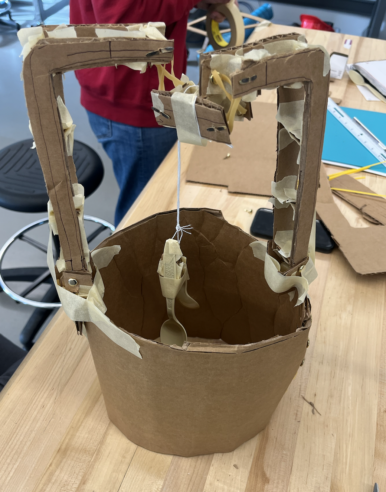

Early low-cost physical prototype

Test of final product stirring water
As a part of MAE 2250 (Mechanical Synthesis), I worked on a semester-long group project to build a consumer-ready project. We built an automatic soup stirrer that would stir soup for an individual who does not have the time. After working through many potential designs as a team and comparing the tests of multiple prototypes, we decided on a final design. I designed and created in CAD the final design, shown here, almost entirely myself.